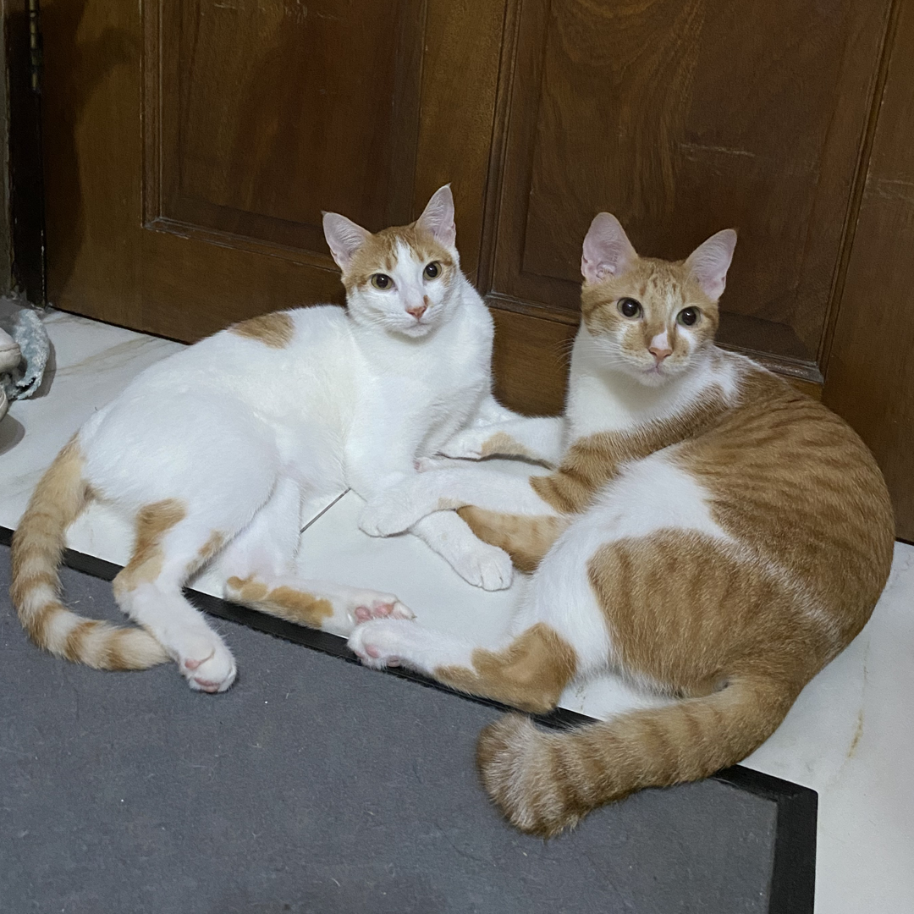

Hasabeah Alombro
Hello everyone! My name is Hasabeah Alombro, but you can call me Beah.
People always ask me
the origin of my name, but the truth is, even I am not sure. I was born in Zamboanga City on January 3, 2000,
now I live in Taguig City.
I share my space with four silly cats, who often ask for affection and food.
I enjoy both socializing with people I'm comfortable with and spending quiet time at home. Whether it's hanging out with friends
or curling up to watch a movie, I find joy in different activities and appreciate a good balance between social interaction and alone time.

- Favorite Color: Red
- Favorite Flavor: Spicy
- Favorite TV Shows: The Walking Dead, The Last of Us, Friends
- Favorite Artist: Twice
- Shopping
- Reading books
- Photo and Video Editing
Favorites and Hobbies
Github Link: